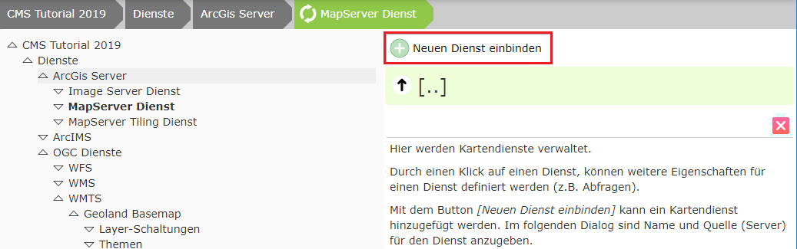
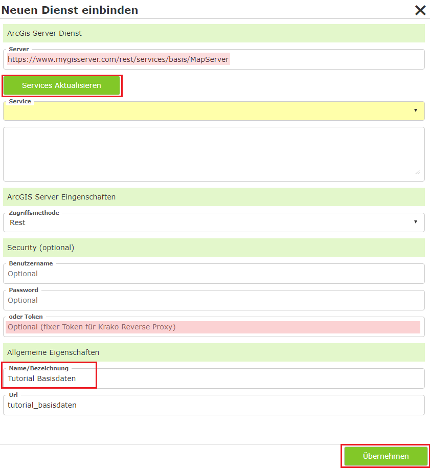
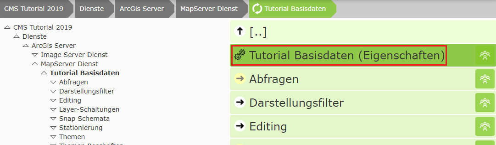
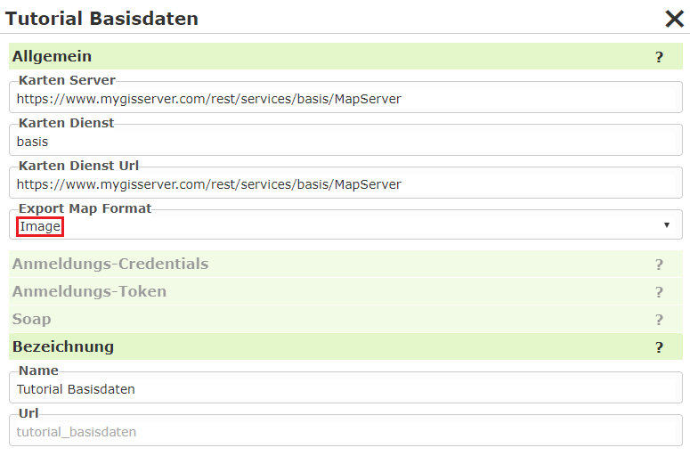
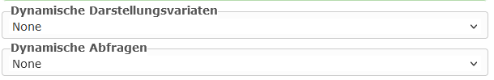

Integrating an ArcGIS Server Service¶
For this, switch to Services/ArcGIS Server/MapServer Service in the CMS tree:

Click Integrate new service:

Then click Update Services, assign a name, and click Apply.
Note
If the name is maintained in the MXD in the case of AGS, it is also already adopted automatically. If it is not maintained, the name in the service is “Layer” or “Layers” => it is not adopted into the CMS => it becomes “General”.
Applying can take a few seconds. Afterwards, you can click on the service in the view and edit further properties of the service:

Once the service appears in the list, further properties of the service can be edited:

Export Map Format: Normally, the AGS returns the result of a map request in JSON format. This contains the URL to the actual image in the output directory. In our case, the image is stored in the output directory behind our firewall and is NOT reachable via the internet. The map image would therefore be created, but is not reachable for the browser. The value “Image” remedies this problem. In this case, the result from the AGS is returned not as JSON, but as an image (bytes). WebGIS receives this directly and stores it in the “Cloud” output directory, which is available via the internet. In the cloud, this method also has the advantage that it cannot be traced via the internet where the map service comes from. Client (Browser) <-> WebGIS <-> ArcGIS Server
Note
For a WebGIS instance installed at a customer’s site, this value should generally be left empty or set to JSON, because a client usually has access to the output directory. This generally results in less traffic:
Client (Browser) <-> WebGIS <-> ArcGIS Server (ImageRequest/JSON)
Client (Browser) <-> Output directory
Dynamic Services¶
The following settings offer a simplification when it comes to parameterization:

Normally, both presentation variants and queries must be parameterized separately in the CMS for a service. This gives the administrator flexibility to determine which topics can be toggled visible or queried, and in what way. However, a grouping of the topics is often already defined in the service. To avoid parameterizing the same thing in multiple places, this setting can be used. This creates the presentation variants dynamically from the service.
Note
Below the service there are the sections Queries and Layer Toggles, where these properties can be
parameterized individually. If you set a value other than None in the options shown here, these sections
disappear. It is only possible to make the content available either dynamically or individually parameterized.
Dynamic Presentation Variants¶
None: The presentation variants must be parameterized individually. To do this, the individual toggles must first be defined in the
Layer Togglessection of the service. These can then be added to a presentation container in theMap ViewerCMS node. This process is described in the following sections.Auto: The topic tree is taken from the service. For each topic, a checkbox button is offered in the corresponding group. In the map viewer, a separate container for this service is created in the presentation-variants TOC.
AutoMaxLevel(1,2,3): The topics are likewise taken from the service here. However, not all hierarchy levels are adopted. The maximum number of levels corresponds to the value specified here. Topics that are located at a deeper level are combined into a single topic (group) that can be toggled via a checkbox.
Example: a service has the following topics:
Base data/Cadastre/Parcels
Base data/Cadastre/Usage symbols
Base data/Cadastre/Labeling
With
Auto, the tree is displayed as follows:[[ Service Container ]] ----------------------- + Base data + Cadastre [x] Parcels [x] Usage symbols [x] Usage symbols
AutoMaxLevel2would limit the tree to two levels. The bottom group would appear as a checkbox and toggle all topics beneath it:[[ Service Container ]] ----------------------- + Base data [x] Cadastre
AutoMaxLevel1finally allows only one level within the presentation-variants container:[[ Service Container ]] ----------------------- [x] Base data
Note
With dynamic presentation variants, the individual layers are always toggled via checkboxes. If you want to use additional options (buttons, option boxes, markers), the complete tree must be parameterized in the CMS via layer toggles/presentation variants.
Dynamic Queries¶
None: The queries must be parameterized for the service in the
Queriessection. This process is described in the next section.Auto: A query topic is created at runtime for each queryable topic in the service. All fields are shown in the results table.
Note
All queryable topics are offered as a query with all fields. If certain topics should be available as a query, or if search fields should be searchable within topics, all queries must be parameterized in the CMS.